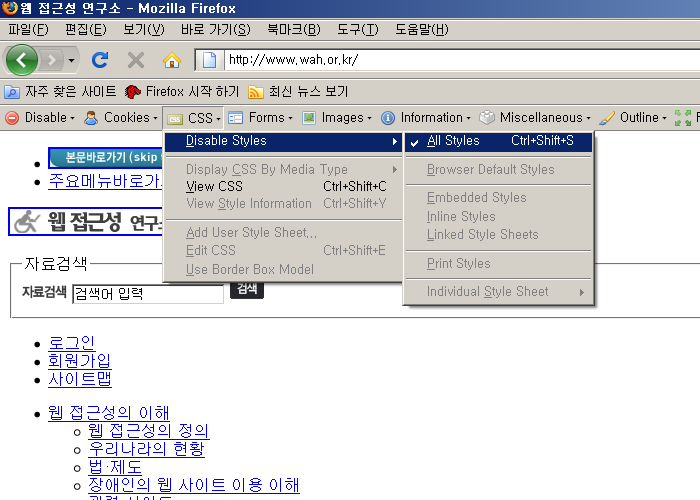

점검 방법 및 준수/위반 사례
이전
목차
다음
파이어폭스 + 부가기능 Web Developer 툴바
3-2. 페이지의 논리적 구성
점검 가능 지표
콘텐츠는 논리적인 순서로 구성되어야 한다.
점검 방법 설명
파이어폭스 [도구]-[Web Developer]-[CSS]-[Disable Styles]-[All Styles] 를 선택하여
CSS 제거한 화면에서 콘텐츠간의 배치순서, Tab 이동의 논리적 순서, 서식(form) 간의 이동 순서가 올바른지 확인한다.
